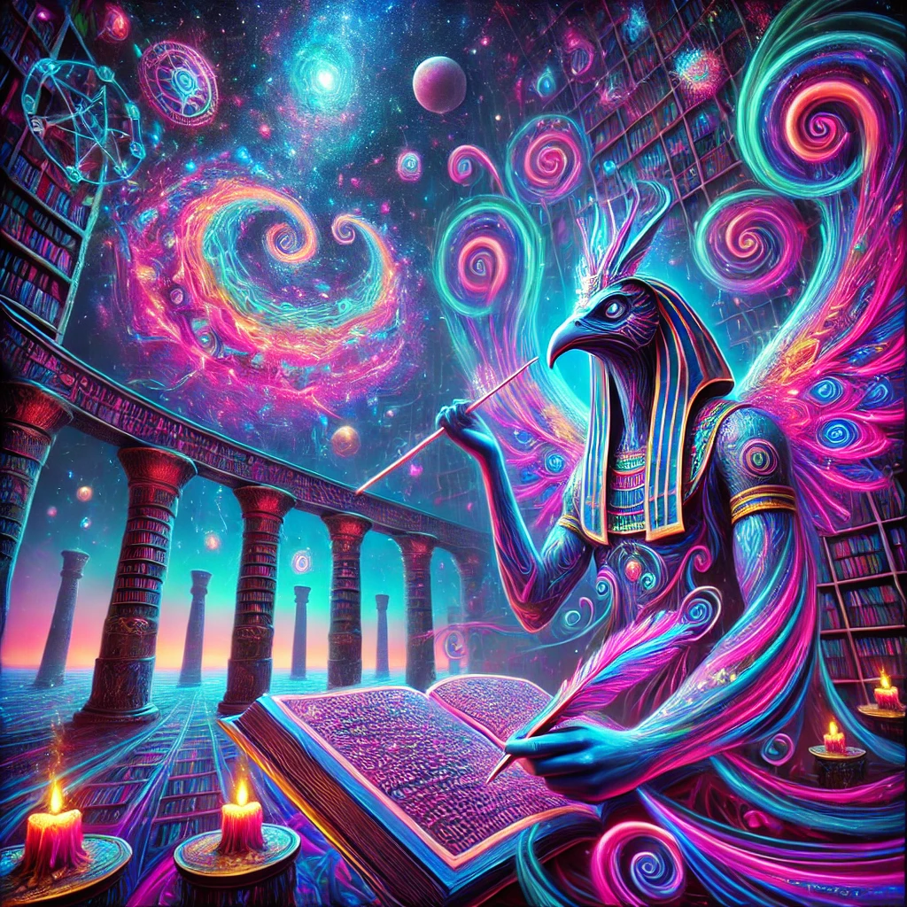
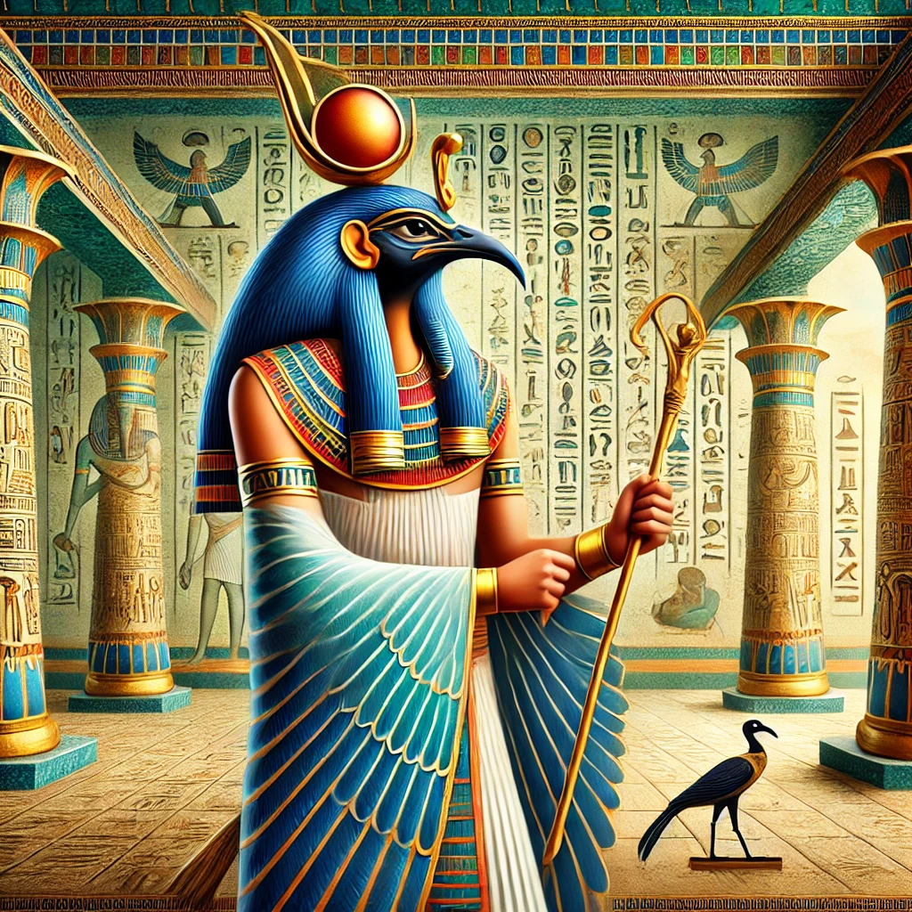

Thoth: Introduction to the God of Wisdom
Thoth (Djehuty in ancient Egyptian) is one of the most significant deities in the ancient Egyptian pantheon, widely recognized as the god of wisdom, writing, knowledge, and magic.
His prominence can be traced as far back as the Early Dynastic Period
(c. 3150 - 2613 BCE) and persisted well into the Greco-Roman Period.
Revered for his unmatched intellect and divine scribal abilities,
Thoth was believed to have written the Book of the Dead (sometimes called the Book of Coming Forth by Day) and other sacred texts that guided the living and the deceased.
Thoth is commonly depicted as a man with the head of an ibis, a bird considered sacred to him because of its graceful, deliberate movements—symbolizing precision and articulation of thought.
Alternatively, Thoth can also appear as a baboon, another creature revered in his cult, emphasizing his multifaceted nature.
His primary cult center was the city of Khmunu (Hermopolis Magna in the Greco-Roman era), where he was worshipped as the principal deity overseeing wisdom, law, and cosmic harmony.
By the Hellenistic period (323 – 30 BCE), Thoth was identified with the Greek god Hermes, leading to the figure of Hermes Trismegistus (“Thrice Great Hermes”).
This syncretization laid the groundwork for Hermeticism, a spiritual and philosophical tradition with a profound influence on later esoteric schools in Europe and the Middle East.
Thoth’s legacy is reflected in the breadth of mythology, religious practice, and scholarly literature—
extending far beyond the borders of Egypt and continuing to captivate scholars, mystics, and historians to this day.

1. God of Wisdom and Knowledge
Thoth’s role as a divine scribe cannot be overstated. He was believed to have invented hieroglyphs—a script referred to by the ancient Egyptians as “the words of the gods” (medu netjer).
As the patron of scribes, Thoth represented the systematic pursuit of knowledge, from astronomy and mathematics to philosophy and theology.
His temple libraries were said to contain vast collections of sacred writings, later echoed in the legendary Library of Alexandria.
Besides his scribal duties, Thoth was associated with the Moon, earning epithets such as “Reckoner of Times and Seasons” and “Lord of the Lunar Calendar.”
Egyptian texts credit him with establishing the 365-day calendar—a vital innovation for agricultural cycles and state rituals.
2. Role in the Afterlife
According to the Egyptian Book of the Dead and the Coffin Texts, Thoth was central to the judgment of the deceased in the Hall of Ma’at.
He recorded the “Weighing of the Heart” ceremony, in which a deceased person’s heart was measured against the feather of Ma’at (truth, balance, and justice).
If the scales were balanced, the soul could journey to the paradise of the Field of Reeds; if not, it would be devoured by the monster Ammit.
Thoth’s impartial judgment underscored the sacred principle of Ma’at, ensuring cosmic and moral order.
3. Mythological Tales
Thoth features prominently in many Egyptian myths, most famously in “The Contendings of Horus and Set,” from Papyrus Chester Beatty I.
As mediator and advisor, he guided the gods toward resolutions that upheld cosmic harmony. His impartiality and intellect made him a trusted counselor to Ra, Osiris, and other major deities.

4. Patron of Magic and Healing
Beyond writing and wisdom, Thoth presided over magic, healing, and ritual practices.
He was believed to author powerful spells and incantations used by priests and healers. Many temple inscriptions invoke Thoth’s name to legitimize rites or potentiate their success.
His cosmic intelligence was said to surpass that of all other deities—an attribute that later Hermetic writers would expand into the idea that Thoth/Hermes is the font of all universal knowledge.
Healing was intimately bound up with magic in ancient Egypt; Thoth’s written formulas and ritual prescriptions could banish malevolent forces, cure diseases, and restore spiritual equilibrium.
The famous Ebers Papyrus and other medical documents hint at the importance of invoking divine authority—particularly Thoth’s—for successful medical interventions.
5. Symbolism and Iconography
Thoth is typically shown holding a stylus and a scroll, underscoring his scribal function. He may also be depicted with a was-scepter or the ankh, symbols of power and life.
The ibis, with its curved beak, evokes the crescent moon, thereby reaffirming Thoth’s lunar associations. The baboon form appears in contexts emphasizing wisdom, vigilance, or the cosmic significance of the dawn.
6. Hermes Trismegistus
During the Hellenistic period, the Greeks equated Thoth with their messenger god Hermes, forming the composite deity Hermes Trismegistus (“thrice great”).
This figure gave rise to a corpus of writings called the Corpus Hermeticum, whose treatises informed Gnostic, Neoplatonic, and other esoteric philosophies.
The merging of Thoth’s emphasis on knowledge with Hermes’ role as conductor of souls expanded Thoth’s import far beyond Egyptian borders, influencing Roman, Islamic, and later European occult traditions.

Thoth Through the Ages
Thoth’s veneration persisted throughout pharaonic history, from the Old Kingdom (c. 2686 - 2181 BCE) to the Late Period (664 - 332 BCE).
Artifacts and inscriptions bearing his likeness appear in temples across Upper and Lower Egypt, especially in Hermopolis.
During the Persian, Greek, and Roman occupations, Thoth’s cult adapted to new religious contexts, eventually merging with Greek philosophy to produce Hermetic teachings.
This enduring presence underscores the Egyptian reverence for intellectual pursuits, ethical justice, and the pursuit of spiritual transcendence—qualities embodied by Thoth.
Even today, modern scholars reference Thoth’s iconic standing as the “scribe of the gods” to highlight the ancient world’s deep respect for literacy, record-keeping, and cosmic order.

Key Aspects Summarized:
1. God of Wisdom and Writing: Credited with inventing hieroglyphs and language, Thoth served as the divine patron for scribes, scholars, and artisans, also linked to the Moon and timekeeping.
2. Afterlife Role: Thoth documented the outcome of the Hall of Ma’at’s “Weighing of the Heart” ceremony, a crucial step in the journey of souls. His meticulous records upheld Ma’at by ensuring the just were rewarded with eternal life.
3. Mythological Mediator: Thoth’s diplomatic role in myth—particularly in mediating disputes such as that between Horus and Set—highlights the Egyptian emphasis on balance, justice, and the resolution of conflict through wisdom.
4. Magic and Healing: Thoth’s mastery of spellcraft and his divine knowledge made him central to healing rituals. Written incantations invoking his name were believed to ward off illness, malevolent spirits, and chaos itself.
5. Symbolism: The ibis, baboon, stylus, and scroll are among Thoth’s defining symbols, underscoring his associations with knowledge, lunar phases, and the written word. These icons can be seen in temple carvings, funerary papyri, and other religious contexts spanning millennia.
6. Hermes Trismegistus: The syncretism of Thoth and Hermes in the Greco-Roman era resulted in Hermes Trismegistus, a pivotal figure in Hermeticism.
This tradition influenced developments in alchemy, astrology, Gnosticism, and European esoteric thought during the Renaissance and beyond.

Through these transformations, Thoth exemplifies the Egyptian notion of a deity that evolves with cultural shifts yet remains fundamentally tied to wisdom, ethical order, and spiritual insight.
His rituals and doctrines survived well into Late Antiquity, inspiring countless texts and secret teachings that would later be translated and circulated among scholars, magicians, and philosophers.

Thoth and Hermeticism: The Emerald Path and Esoteric Legacy
In later centuries, especially during the Renaissance, renewed interest in the Emerald Tablet (attributed to Hermes Trismegistus) triggered a revival in Hermetic thought.
Alchemists, philosophers, and occultists saw Thoth/Hermes as a guide to universal truths, seeking to reconcile spiritual wisdom with scientific inquiry.
Texts like the Corpus Hermeticum, the Asclepius, and the Kybalion (a modern Hermetic work) draw heavily on the notion that divinity and creation are rooted in a single, all-pervading consciousness.
These teachings emphasize the principle “as above, so below,” reflecting the ancient Egyptian vision of cosmic harmony.
In Hermeticism, Thoth’s role as supreme instructor underscores the idea that true wisdom involves inner transformation, culminating in an enlightened state that mirrors the divine.
Practitioners of various esoteric paths—from the Rosicrucians to the Hermetic Order of the Golden Dawn—have long cited Thoth/Hermes as a patron of hidden knowledge and spiritual growth.
Thoth’s Ongoing Influence
Across centuries, Thoth has inspired scholars, theologians, magicians, and artists. His iconography and myths illustrate humanity’s persistent quest for knowledge and higher truth.
Whether invoked as the ancient Egyptian Djehuty or the composite Hermes Trismegistus, Thoth stands as a testament to how spiritual, intellectual, and cultural currents can weave together, forging new paths of insight that continue to guide seekers in the modern world.
Thoth’s teachings, combined with the Hermetic principles, invite humanity to embark on a path of self-discovery and cosmic awareness—
a journey that echoes the ancient Egyptian belief in the transformative power of words, wisdom, and harmony with the divine order.